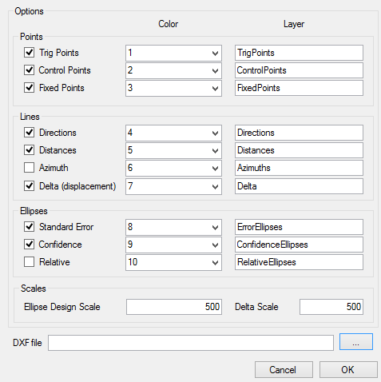

Exports
Relatório Html
No botão report, exporta-se o relatório que contém toda a informação relevante do processamento.- Análises estatísticas
- Coordenadas ajustadas
- Observações ajustadas
Formato DXF
O SolNNet possibilita a exportação para o formato DXF de todos os elementos da rede: vértices, observações, elipses e deslocamentos; pode-se associar uma cor (número) a cada elemento, a designação do nome do layer que irá pertencer e as escalas dos deslocamentos e das elipses.
